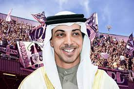

PALERMO CALCIO
Nuova Proprieta'
Lo sceicco Mansour, colui che ha stravolto le gerarchie del football europeo degli anni Duemila, non si è fermato a Manchester e ha creato dal 2013 una rete composta ora da 12 club sparsi in tutto il mondo: da New York a Melbourne, da Montevideo a Yokohama, da Girona a Mumbai. Le disponibilita' sono in teoria illimitate ma il City Football Group ha ragion d’essere perché mette al centro una programmazione sportiva e commerciale e sinergie intercontinentali. I soldi non si sprecano, si investono. Il piano sportivo prevede il consolidamento in Serie B e l’assalto alla A in due anni, quello aziendale contempla la realizzazione di un centro sportivo per le giovanili e la prima squadra, "uguale a tutti quelli che il City ha in giro per il mondo", e l’ammodernamento dello stadio Barbera. La nuova proprietà ha già incontrato il sindaco di Palermo Roberto Lagalla, il quale ha spiegato: "Il Barbera può essere oggetto di restyling già da subito e poi, quando la situazione si sarà consolidata, si potrà pensare a significativi interventi di ristrutturazione". La chiave sarà quella di sfruttare questo capitale di entusiasmo più efficacemente del passato: ai suoi massimi storici, il fatturato caratteristico rosanero non superava quota 50 milioni. "Rispetto il marchio, per cui non vedo un cambiamento del logo. Però quello che vogliamo è portare questo marchio ovunque, anche a New York. Useremo le nostre piattaforme per lavorare sul brand Palermo anche negli Usa".
L'estate di Palermo: 20 giorni dopo la promozione costruita con una fantastica scalata nei play off, la svolta epocale sul piano societario, con la cessione dell'80% del pacchetto azionario al City Football Group Limited, holding dai capitali arabo inglesi che gestisce altri 10 club in giro per il Mondo e ha come capofila il Manchester City di Pep Guardiola.
